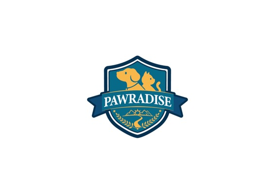

毛孩社交學院 PAWRADISE
S1・狗狗幼稚園 · 學期進度報告
2026 年 7 月
學員 STUDENT
Mochi 糯米
📷點擊上載
狗狗相片
狗狗相片
A
評級
三大核心指標 · CORE PROGRESS
情緒恢復時間
▼ 76%
越短越好 · Recovery
爆發距離
▼ 62%
越近越好 · Threshold
自主轉頭能力
▲ 4.5×
越多越好 · Disengagement

下學期建議練習方向
·每日進行 10 分鐘嗅聞遊戲
·遠距離看見其他狗狗時保持冷靜，即時給予獎勵
·多獎勵狗狗安靜放鬆的時刻
建議續報 S1・狗狗幼稚園 新學期
鞏固社交基礎，向 A+ 穩定社交犬進發
導師 陳 Karen
2026.07.07 發出
PAWRADISE 毛孩社交學院